Engineering Project Portfolio
Tina (Shuting) Zheng
A small collection of my favourite projects as a final-year BE/ME Mechatronics student at UQ
Autonomous Coffee Bean Harvester
Mechatronics System Design II
Final Rank: High Distinction
Duration: July 2024 - November 2024
Key skills: CAD • FEA • Python • Electronics • Project management • Manufacturing Techniques
In Mechatronics System Design II (METR4810), we were tasked to create an autonomous harvester to traverse through a 2 x 2 x 0.1 m sand pit, locate coffee bean deposits, and extract it from beneath the surface to be collected at a delivery point. This project was completed in a team of four, where I specialised in the mechanical subsystem to develop both the drive subsystem and the harvesting subsystem. Our final prototype achieved one of the highest demonstration scores in the cohort (93%).
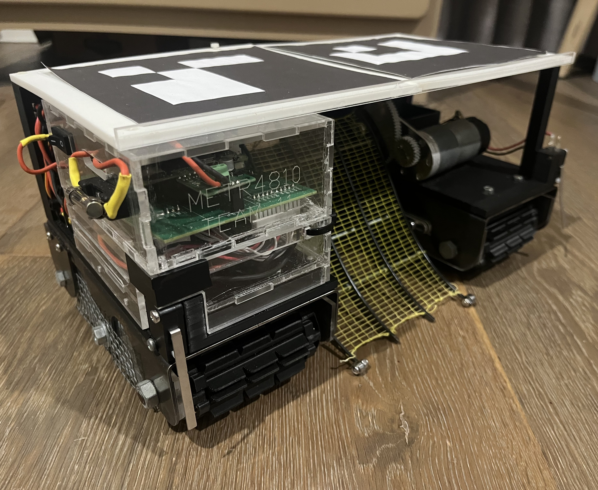

Drive Subsystem
My first challenge was selecting an appropriate drive system for traversing sand. After reviewing literature and comparing different mechanisms, tracks were identified as the most effective solution, enabling a simple two-motor differential drive.
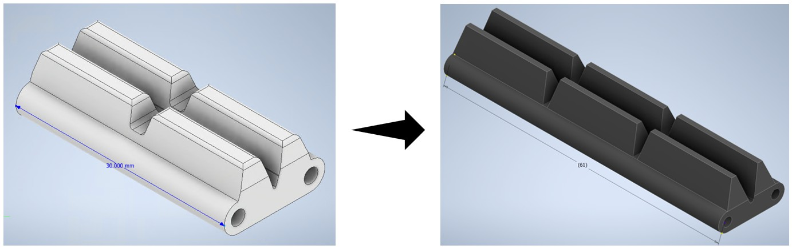
Through testing and iterative design, I developed treads with a pronounced pattern to maximise surface area and grip, while maintaining a wide profile to distribute the robot’s weight over the sand. This resulted in a reliable drive system that maintained sufficient traction while effectively preventing sinking.
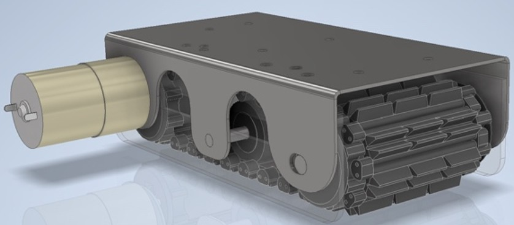
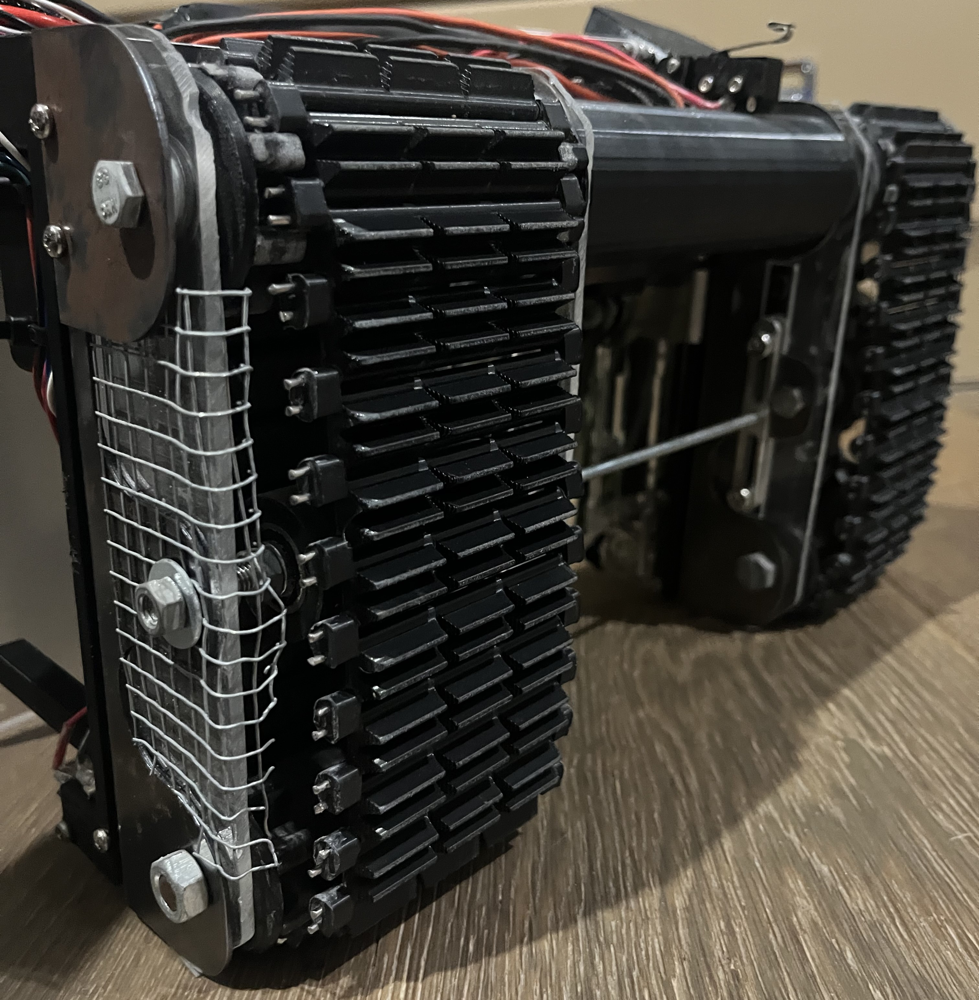
Harvesting Subsystem
The collection mechanism was actuated with a DC motor and a partial gear. This was to increase the available torque for the motor, as well as decrease the rotational speed for more accurate control. The gear ratio also allows the axis of rotation to be as close to the hopper as possible without shifting the motor close to the hopper, which would contribute to the back-heavy weight imbalance.
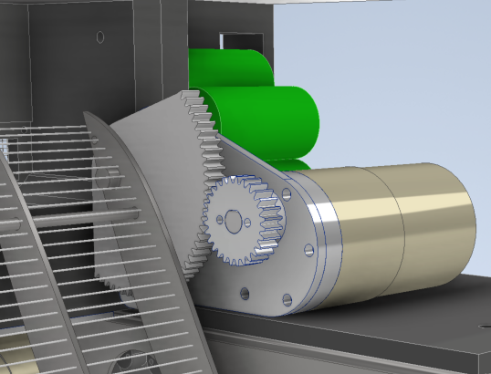
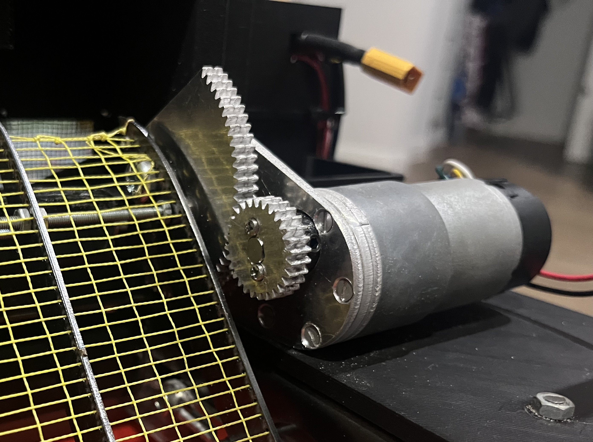
As the system traverses through the sand, the hopper arm is pushed beneath the surface of the sand to collect the coffee beans. The arms were also equipped with small bearings so that the arms can be lowered into the sand without the risk of jamming on the base of the sandpit. As the harvesting arms rotate upwards, the coffee beans are then deposited into the hopper, which was designed to funnel the coffee beans into the delivery point.
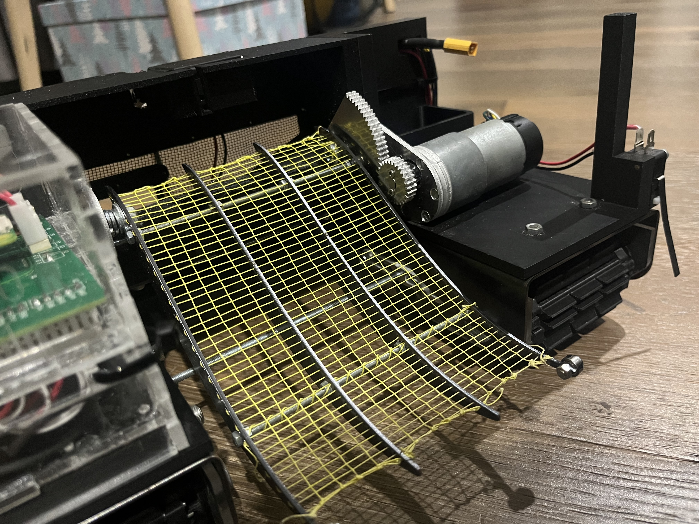
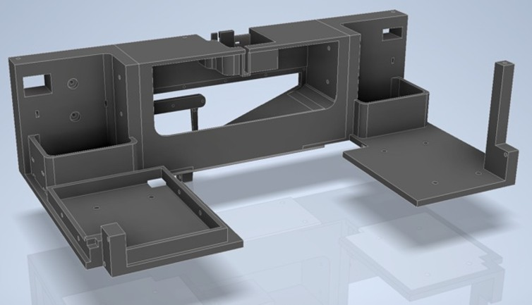
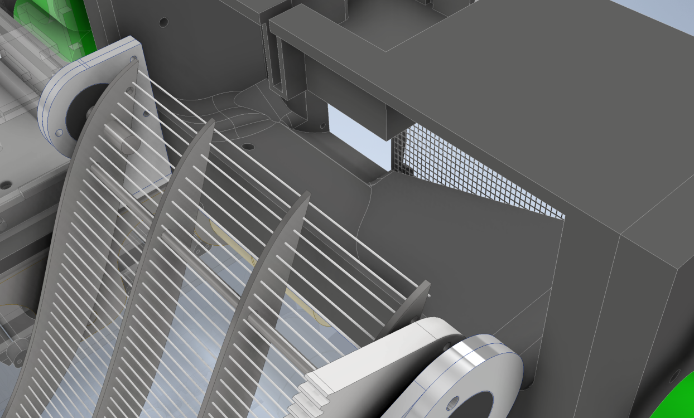
The localisation system used ArUco markers, which were attached to the roof of the system. By placing ArUco markers on the system and around the sand pit, computer vision was used to locate the system and guide it along a pre-determined path.
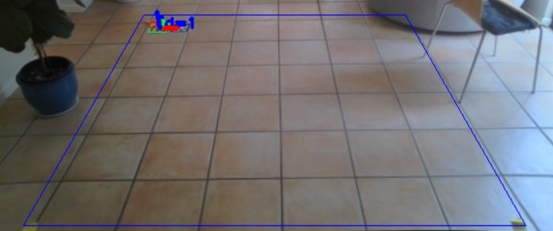
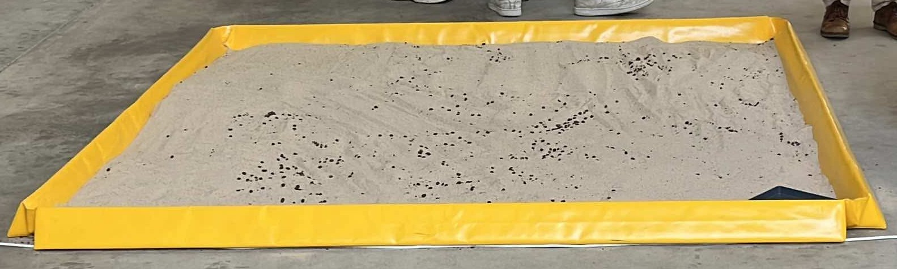
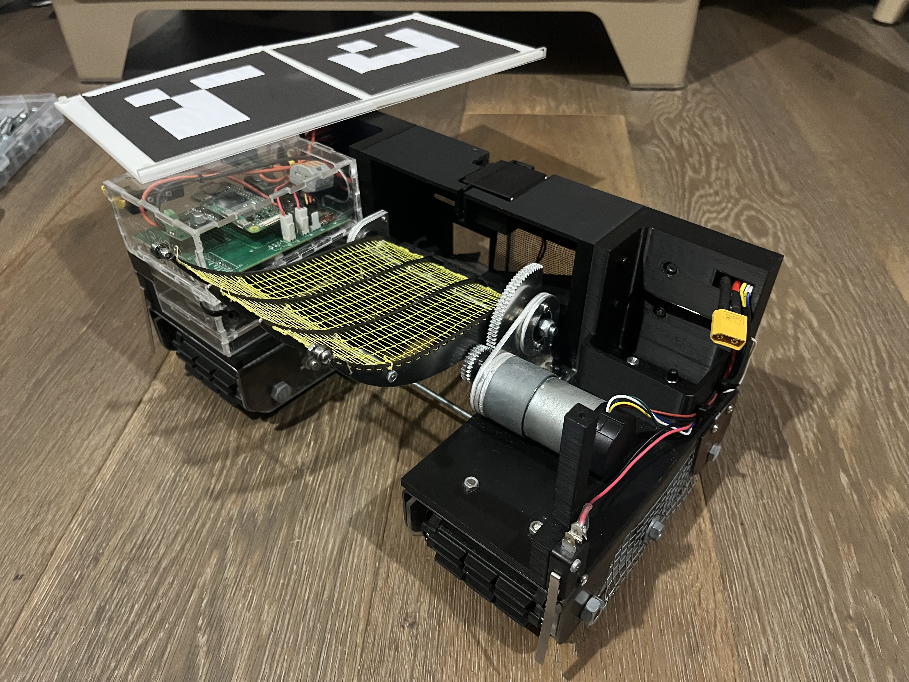
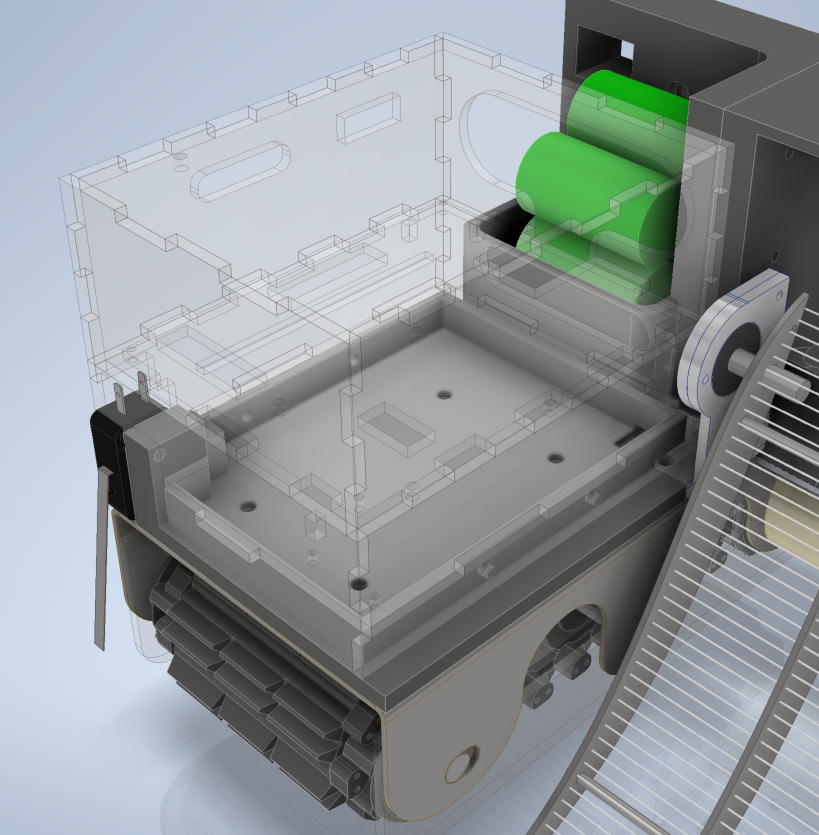
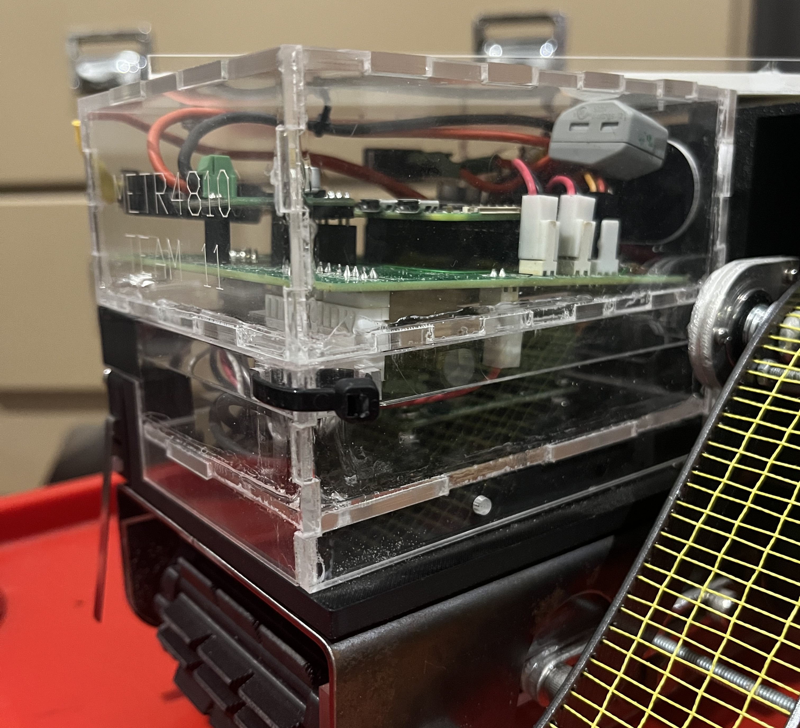
This design also utilised the following components:
- Raspberry Pi Zero 2 microcontroller
- Continuous servos
- Limit Switches
- Reversible encoder DC motors
- Manufactured aluminium gears
Additionally, key skills were developed in:
- CAD Modelling: Autodesk Inventor and AutoCAD, with extensive practice in assemblies and constraints
- Mechanical Design & Analysis: designing functional mechanisms under space and power constraints through manual calculations and FEA
- Manufacturing Techniques: acrylic and fibre laser cutters, press brake machines, and 3D printing
- Electronics & Assembly: soldering, circuit assembly, and hardware troubleshooting
- Programming: Python
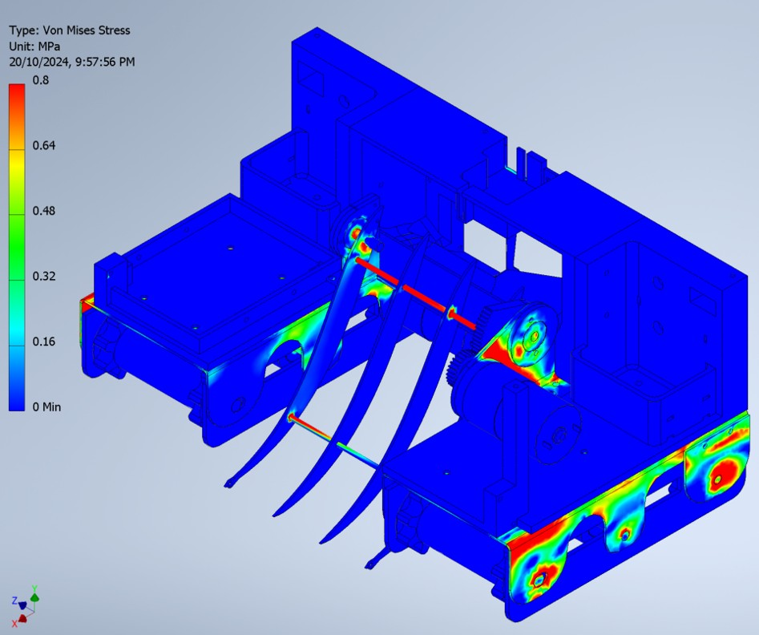